複数のTwitterアカウントを登録し、切り替えて使用することができます。ブラウザのタブ等を利用すれば、複数のアカウントを同時に操作することも可能です。
短縮URL展開 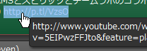短縮URLの短縮前URLを表示することができます。現在対応している短縮URLはbit.ly、j.mp、tinyurl.com、goo.gl、ow.ly、u.nu、amzn.to、p.tl、am6.jp、htn.to、nico.ms、t.co、moby.to、tl.gd、a.r10.to、s.nikkei.com、moi.st、ht.ly、ff.im、dlvr.itです。
画像サムネイル表示 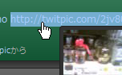画像のサムネイルを表示することができます。現在対応しているサイトはtwitpic.com、ow.ly、yfrog.com、twitvideo.jp、plixi.com(tweetphoto.com)、p.twipple.jp、movapic.com、pckles.com、フォト蔵、img.lyです。
NGワード設定 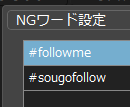NGワードを設定し、指定した文字列を含むツイートをタイムライン上に表示しないようにすることができます。
URL短縮(j.mp) 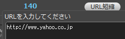URLの短縮を当アプリケーション上で行うことができます。(j.mpのアカウントがある場合はj.mp、ない場合はgoo.gl)
片思いチェック 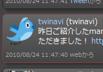片思いユーザ(＝こちらがフォローしているが、相手側がフォローしていない)をタイムライン上で明示的に表示することができます。
返信元表示 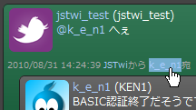in_reply_toを含むツイートの場合は、返信元ツイートの内容を表示することができます。返信元の返信元…と遡って表示することもできます。
日⇔英翻訳(Google翻訳API) 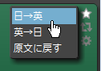Googleの翻訳APIを使用して、ツイートを日→英翻訳、英→日翻訳することができます。
ゲストモード(認証なし) 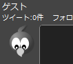OAuth認証なしで当アプリケーションを使用することができます。パブリックタイムラインの表示やユーザごとのタイムライン表示が認証なしで使用できます。
ニコニコ動画サムネイル表示 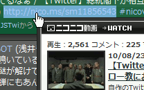ニコニコ動画のサムネイルを表示することができます。
GoogleMap表示 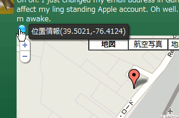ツイートに位置情報が設定されている場合は、周辺地図をGoogleMapで表示することができます。
動画再生 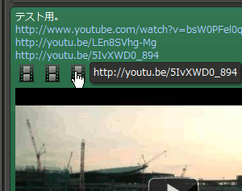動画のインライン再生ができます。現在対応しているサイトはYoutube、ニコニコ動画です。（※ニコニコ動画は、JSTwi webでのみ再生できます。）
ミュート機能 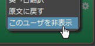指定したユーザを一時的にタイムライン上に表示しないようにすることができます。
お気に入りユーザ 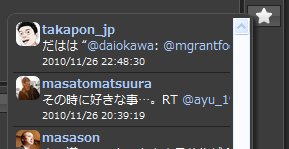お気に入りに登録したユーザの最新ツイート一覧が表示できます。
ツイートマップ 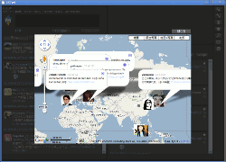位置情報付きのツイートを1枚の地図に表示することができます。

{kind=link}
{kind=link}
{kind=link}